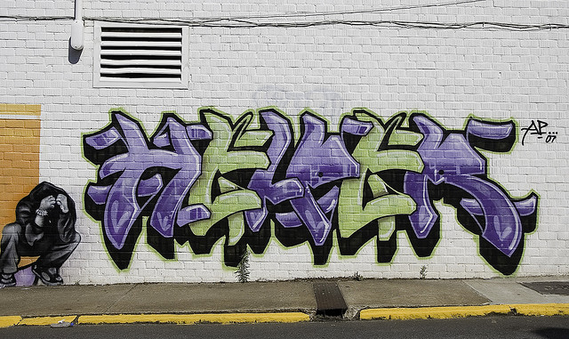

Rails Helper Methods
When I had started developing in Rails it was months before I even heard of “Helper Methods”. I did see the folder in the app directory, but I didn’t see any use for it at the time. I mean Rails is pretty much Model-View-Controller, so why would anyone need helper methods?
Well once I found an example online of a helper method it just clicked. A helper method is a method written for the view, it’s designed to be reusable anywhere within the website, and it cleans up the view code by separating out some logic.
For example, I currently use Cloudinary for image hosting services. Cloudinary has its own methods for displaying images within a website. It is possible that I may one day want to change and not use Cloudinary any more. So I wrote some helper methods that will call either Cloudinary’s image helper, or the standard image helper tag depending on if Cloudinary is defined:
# /app/helpers/image_helper.rb
module ImageHelper
def ex_image_tag(*arguments, **keyword_arguments, &block)
if defined? Cloudinary
cl_image_tag(*arguments, **keyword_arguments, &block)
else
image_tag(*arguments, **keyword_arguments, &block)
end
end
def ex_image_path(*arguments, **keyword_arguments, &block)
if defined? Cloudinary
cl_image_path(*arguments, **keyword_arguments, &block)
else
image_path(*arguments, **keyword_arguments, &block)
end
end
endNow anywhere in my view I use ex_image_url and ex_image_path as my image helpers. So in theory the code may work without much, if any, change when change is needed.
Just today I wrote a helper method for Gravatar images. Gravatar is basically a Global Avatar per email address. Many websites have Gravatar integrated so that when you use your email address on their site you automatically have a profile image associated with it. It’s one central place to keep your professional image. Here’s my helper method:
# /app/helpers/image_helper.rb
module ImageHelper
def gravatar(email, size, border)
"<img src=\"http://www.gravatar.com/avatar/#{
Digest::MD5.new.update(
email.to_s.strip.downcase
).hexdigest
}?d=blank&s=#{size}&r=g\" style=\"height:#{size}px;width:#{size}px;border:#{border}px\">".html_safe
end
endFor more details on how to modify this method for your own usage see my Coderwall Pro-Tip “Rails Gravatar Helper Method“.
Calling a helper method in your view is straight forward. For an example of using my Gravatar code in the view I could do the following:
Profile Picture:<br />
<%= gravatar(profile.email, 72, 3) %>In the example above the helper method gravatar is called and renders out html in place in the view. The example gets the email from the profile Object in the view with profile.email. So now you have a Gravatar profile image as easy as that thanks to helper methods!
Now there are times when you want to use your helper methods in your Controllers but you will find that the helper methods aren’t available within the scope of the Controllers. There are a few techniques available on this StackOverflow answer “Rails – How to use a Helper Inside a Controller“.
One answer that’s not given on any StackOverflow answer that I can see is to write the methods in the Controller rather than the Helper. Consider where you will need to use the method. If you need to use it in both the controller and the view then write it in the controller. Then use the wonderful method named helper_method.
# /app/controllers/application_controller.rb
class ApplicationController < ActionController::Base
def notification_count
current_user.emails.count +
current_user.friend_requests.count +
current_user.close_friends.updates.count
end
helper_method :notification_count
endNow please don’t be too hasty to place “everything” in the application controller. The application controller will end up becoming way too cluttered and bloated if you do. But if you “need” to have access to a method in both the controllers and the views then this is a good place for you; helper_method has your back. It’s simple, beautiful, and convenient.
Now with more experience comes more wisdom. In my last code example you’ll notice I’ve called count on several different queries from the DB all relating to the current_user. You could call this a code smell. Honestly I wrote this method just for an example of using helper_method within your controller. But when using query logic like this for your User then you should move this to a Model method. You can’t call current_user from within models since it’s out of scope so you will need to change the code up a bit.
# /app/models/user.rb
class User < ActiveRecord::Base
def notification_count
self.emails.count +
self.friend_requests.count +
self.close_friends.updates.count
end
endNow the method notification_count is a Class/Object instance method of User. current_user is an instance of User so you can call current_user.notification_count and it will refer to all the related objects to self, a.k.a. current_user instance. You can use this in both the view and your controllers now with current_user. (current_user is a method available with the devise gem/library)
So database model specific things should be in your models files, other than that helper methods are there to “help” you with you view. And if any specific need should arise you can have your helper methods defined within controllers with helper_method. It’s good practice to separate logic out of your view when you can. It’s the pattern of “Separation of Concerns”. What concerns the model, belongs with the model. And the same is true for the rest of your project.
As always I hope you found this both an enjoyable and an insightful read. Please comment, share, subscribe to my RSS Feed, and follow me on twitter @6ftdan!
God Bless!
-Daniel P. Clark
Image by Brooke Novak via the Creative Commons Attribution-NonCommercial-NoDerivs 2.0 Generic License.
Yoni
January 29, 2015 - 5:33 am
I would emphasize the importance of keeping your controller slim, because it can bloat up fast. Enjoyed the post, cheers!
Daniel P. Clark
January 29, 2015 - 5:48 am
For sure. I don’t generally like putting things directly into ApplicationControlller because it’s like throwing random things into the closet. When you open it up it’s a mess with no organization.
Mikey
January 29, 2015 - 10:02 am
Alright man, wicked article. Couple of things to watch out for with helpers:
Firstly they are *all* included by default. You can change this, but either way if you end up with two methods in two separate helpers both called something like “format_nicely” or something like that, the one that is included last will be the one that gets used! You suddenly are required to check all current helper method names before you make a new one, or adopt some kind of naming convention to ensure you don’t stand on your own foot (yuck).
Secondly – the examples you’ve given here are really good examples of when to use helpers. As a general rule, I think helpers should end with something like “_path” or “_tag” (or at least serve the purpose of “rendering something”) and represent reusable pieces of UI code. A common trap that some developers fall into is using them for “presentation logic” for their models (e.g. “def nicely_formatted_title” or “def dropdown_options_for_my_model”). These sorts of thing don’t really belong in helpers – they belong in presenters (either a home-grown presenter OR one cooked up using the draper gem).
As someone who is currently trying to migrate a legacy app where developers liberally used helpers for such things as business logic and presentation logic, I can vouch that when they’re mis-used helpers are a total pain!
M/ -Mikey
Daniel P. Clark
January 29, 2015 - 10:34 am
Thanks Mikey!
Yeah. I had noticed that all helpers are included. No matter what the helper file name it’s accessible everywhere in the projects views. It’s good that we can separate logic into files that are named with the right intention of what they are for; but I wasn’t so sure it’s good that Rails automatically includes them all. I would rather write an include ImageHelper in my main ApplicationHelper to have things globally. I wasn’t entirely sure that it was the intent of the “Rails way” of doing things so I didn’t write about it.
One excellent way to clean up both Helper and Controller files is to write methods within a module in your lib directory, then include it in the controller, then use helper_method to make it available within the view.
You can better organize all the things you don’t think belong elsewhere into lib. Just make sure the directory is in the include path and it’s smooth sailing.
Out of curiosity, where do you keep your presenters at? Do you follow any specific guidelines for them? I’ve heard presenters talked about in a few conference talks I’ve watched, but as I understand it there isn’t a “set in stone” practice for how they’re implemented.
Jeff Dickey
January 30, 2015 - 1:27 pm
Mikey in particular implied this, but people tend to forget one very basic, ugly fact about helpers:
They are global, procedural code whose interaction with the outside world, and knowledge of/interference with anything‘s state, can not be independently enforced. You are juggling the Swiss Army Ginsu Flamethrowers™, plural, while each is in full operation, and all safeties are off.
My usual coping mechanism for this has been to have each helper function be a simple wrapper around an instance of a separately-defined class. Better would be the seemingly-moribund Erector or, more recently, Nick Sutterer’s Trailblazer (top-level Github repo here).
Daniel P. Clark
January 30, 2015 - 4:59 pm
I take it you don’t like helpers? 😉 Erector and Trailblazer look interesting. Erector looks like an HTML builder tool, whereas Trailblazer looks like a fitness diet for Rails … P90x.
Jeff Dickey
February 1, 2015 - 12:39 pm
I don’t like anything that depends on (and can trash) global app state. I’ve seen plenty of newbies (including myself not very many years ago) write view helper code that did truly stupid things, like db (well, Redis) access and direct network access using stuff like HTTParty (a fine tool, but for view helper/template code?!?)
In my view, and feel free to persuade me otherwise, Rails helpers ought to be decorators; something that arranges and formats something in the passed-in locals to remove the temptation of embedded logic in your views. This reduces view testing to “did elements with the CSS we expect and content matching the general pattern we expect show up”? Since that’s redundant with the apparent consensus on feature specs, we can then eliminate the view specs as such.
Anything that “knows” about anything’s state should get passed in from the controller (if you’re a pure Rails-Way shop) or your service-layer equivalent (if you’re not) where it can be thoroughly namespaced, isolated, and tested. I don’t like nasty surprises, especially self-inflicted ones. View logic has been an appallingly rich source of such surprises.
Or maybe I’m profoundly misunderstanding something?
Daniel P. Clark
February 1, 2015 - 6:23 pm
I’d have to agree with you about knowing state from within helpers as being taboo. The way I see helpers is they should be used just like partials, but they should generally be smaller and simpler. I feel there is an advantage in performance this way, but I still wouldn’t unload partials into the helpers.
I like to keep helpers to mere image helpers, date/time formatters, or any special text formatting that needs to be repeated. I wrote a non-breaking-space helper that will substitute all spaces for … so things like that.
I would never use state checking like user_signed_in? within helpers. I use methods like that in the view for rendering, and methods like that in the controller for writing permissions.
hoang dang
June 11, 2017 - 3:46 am
great job man